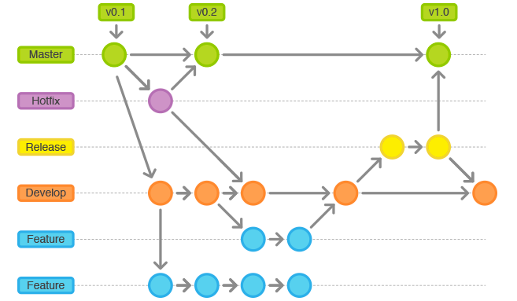
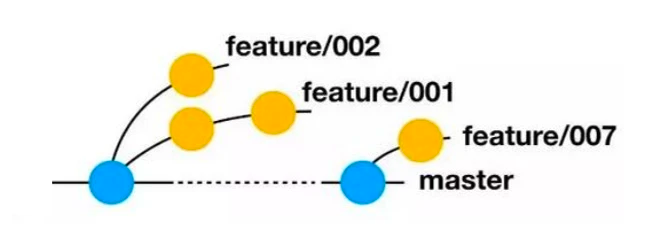
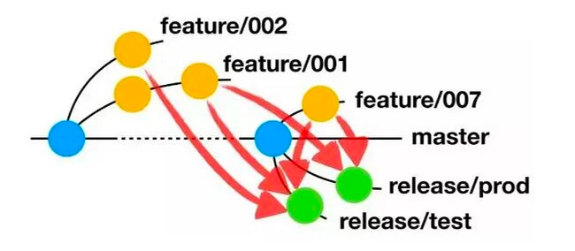
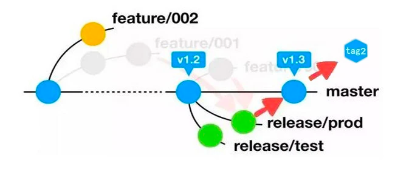
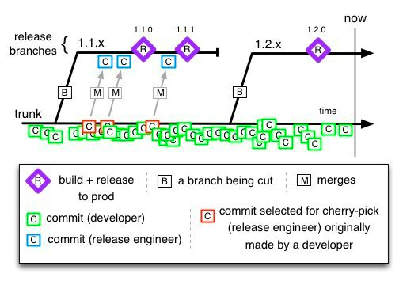
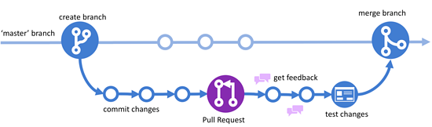

分支管理模型
初衷
构建一个能闭环管理分支生命周期的工具（系统），为业务团队提供便捷可靠的分支管理策略，为CI/CD提供可数源的分支。
背景
为解决下面的问题，并为CI/CD打造更加稳固的基石，我们决定立项做一个分支管理系统
- 项目越来越大，每次迭代都回有很多的功能分支，要上线的时候，不知道分支的合并情况
- 测试经常都需要进行功能组合测试，每次测试前都是需要找相应的研发进行分支合并
- 研发每次合并都要进入Gitlab页面进行手动创建
- 分支发布完成后，没有闭环将上线内容合入基线；发布分支不能及时更新基线变更，导致功能丢失
分支管理模型
GitFlow
最早出现的分支管理模型，是若干模式的集大成者
通常包含五种类型的分支：Master(主干)、Develop(开发)、Feature(特性)、Release(发布)以及Hotfix(热修复)
分支类型
Master：主干分支，也是正式发布版本的分支，其包含可以部署到生产环境中的代码，通常情况下只允许其他分支将代码合入，不允许向Master分支直接提交代码（对应生产环境）。Develop：开发分支，用来集成测试最新合入的开发成果，包含要发布到下一个Release的代码（对应开发环境）。Feature：特性分支，通常从Develop分支拉出，每个新特性的开发对应一个特性分支，用于开发人员提交代码并进行自测。自测完成后，会将Feature分支的代码合并至Develop分支，进入下一个Release。Release：发布分支，发布新版本时，基于Develop分支创建，发布完成后，合并到Master和Develop分支（对应集成测试环境）。Hotfix：热修复分支，生产环境发现新Bug时创建的临时分支，问题验证通过后，合并到Master和Develop分支。
分支流程
通常开发过程中新特性的开发过程如下：
- 从Develop分支拉取一条Feature分支，开发团队在Feature分支上进行新功能开发；
- 开发完成后，将Feature分支合入到Develop分支，并进行开发环境的验证；
- 开发环境验证完成，从Develop分支拉取一条Release分支，到测试环境进行SIT/UAT测试；
- 测试无问题后，可将Develop分支合入Master分支，待发版时，直接将Master分支代码部署到生产环境。

优点
每个分支都有明确的定义，严格按照GitFlow管理项目代码的话，很难出现代码混乱
缺点
- 合并冲突，合并冲突在使用 Git Flow 是非常常见的。原因很简单：如果你有多个并行功能分支，他们长时间存在，那么很可能代码库的相同部分在两个功能分支中被分别更改。合并冲突不仅对于需要手动解决的开发人员来说是令人沮丧的，也增加了在代码中破坏某些功能的风险，因为当你不得不决定使用哪个版本代码时，很容易犯错。
- 功能分离，在合并到同一个分支之前，你不能测试两个功能的组合。当你在单独的分支中开发几天甚至几周的功能时，当合并回主分支后，可能也会发生两个功能的相互作用影响了你的代码。
- 并没有做到持续交付，在 Git Flow 分支模型下，发布是非常有计划的，一个 feature 必须要经过一系列步骤才能到达生产环境，在时间上平均一个 feature 都要等待 两周时间才能长线，这样的等待并非是需求上的“按计划发布”，而是从技术上就造成了发布瓶颈，显然难以达到持续交付的要求。
- 与持续集成相悖，你会发现，在坚持持续集成实践的情况下，feature 分支是一件非常矛盾的事情。持续集成鼓励更加频繁的代码集成和交互，让冲突越早解决越好。feature 分支的代码隔离策略却在尽可能推迟代码的集成。
AoneFlow
AoneFlow 是 GitFlow 的为适应持续集成的变种GitFlow
相对于 GitFlow，Aone要更加符合持续集成的理念
AoneFlow 只使用三种分支类型：Master、feature、release，以及三条基本规则
规则一，开始工作前，从master创建feature分支
从代表最新已发布版本的master分支上创建一个通常以feature/前缀命名的特性分支，然后在这个分支上提交代码修改。
也就是说，每个工作项（可以是一个人完成，或是多个人协作完成）对应一个特性分支，所有的修改都不允许直接提交到master分支。

规则二，通过合并feature分支，形成release分支
从master分支上拉出一条新分支，将所有本次要集成或发布的feature分支依次合并过去，从而得到release分支。
release分支通常以release/前缀命名。

规则三，发布到线上正式环境后，合并相应的release分支到master分支，在master分支上添加tag，同时删除该release分支关联的feature分支
为了避免在代码仓库里堆积大量历史上的feature分支，还应该清理掉已经上线部分feature分支。
如果要回溯历史版本，只需在master分支上找到相应的版本的tag即可。

优点
- 保存了特性分支的概念，能独立的管理需求特性
- 去除了develop分支，强化了release分支的作用，加快了特性分支上线的进度
- master作为主干分支，保证了一个永远稳定的版本
- tag机制，保证代码可以快速回滚到指定的稳定版本
缺点
- 合并冲突依旧很多
- 没有hotfix概念，只能从master（或者tag）拉出分支进行开发上线；
- hotfix没有明确规范，hotfix修改bug上线后，可能回导致当前release分支丢失hotfix的改动
TBD(Trunk based Development)
Trunk based Development，又叫 主干开发 ，是一套代码分支管理策略，开发人员之间通过约定向被指定为 主干 的分支提交代码，以此抵抗因为长期存在的多分支导致的开发压力。
此举可 避免分支合并的困扰，保证随时拥有可发布的版本 。
“主干”这个词隐喻了树木生长的场景，树木最粗最长的部位是主干，分支从主干分离出来但是长度有限。
Trunk Based Development 模型是当下时代的产物，也已被 Google、Facebook、TW 等企业实践。

使用主干开发后，我们的代码库原则上就只能有一个 Trunk 分支即 master 分支了，所有新功能的提交也都提交到 master 分支上，保证每次提交后 master 分支都是可随时发布的状态。
没有了分支的代码隔离，测试和解决冲突都变得简单，持续集成也变得稳定了许多，但也有如下几个问题：
- 如何避免发布引入未完成 Feature，答案是使用 Feature Toggle 。
- 在代码库里加一个特性开关来随时打开和关闭新特性是最容易想到的也是最容易被质疑的解决方案。
- Feature Toggle 是有成本的，不管是在加 Toggle 时的代码设计，还是在移除 Toggle 时的人力成本和风险，都是需要和它带来的价值进行衡量的。
- 如果功能能有统一的代码框架，将 Feature Toggle 融入到框架中，应该非常不错
- 如何进行线上 Bug Fix，答案是在发布时打上 Release Tag，一旦发现这个版本有问题，如果此时 master 分支还没有其他提交，那可以直接在 master 分支上 Hot Fix 然后合并至 release 分支；如果 master 分支已经有了提交就需要做以下三件事：
- 从 Release Tag 创建发布分支
- 在 master 上做 Fix Bug 提交。
- 将 Fix Bug 提交 Cherry Pick 到 release 分支。
- 为 release 分支打上新的 Tag 并做一次发布。
优点（其实我个人比较喜欢这种）
- 主干开发是助力实现 持续集成 和 持续交付 的关键因素。开发团队的成员一天多次地将代码提交到主干分支，满足了持续交付的必要条件。团队的工作在 24 小时内就可以被整合，这保证了代码版本随时处于可发布状态，使得持续交付成为可能。
- 分支模型非常简单，commit管理非常便捷
缺点
- 需要考虑未完成，或者有问题的commit上线，操作起来比较麻烦
- 需求进行上线问题修复时，需要手动进行Cherry Pick
GitHub Flow
GitHub Flow 是一个更轻量级的软件开发模型，示意图如下。
它摒弃了 Git Flow 中繁杂的分支， 只保留一个主分支 master 。
开发新功能时从 master 分支上拉取 feature 分支，开发完成后发起 Pull-Request ，小组内进行评审和反馈，此时也进行 Code Review 。
测试通过后合并回主分支。

相比于 Git Flow，这种方式因为省去了一些分支而降低了复杂度，同时也更符合持续集成的思想，以一张故事卡为集成的最小单位，相对来说集成的周期短，反馈的速度也快，能够及早的遇到问题并及早解决。
顺着持续集成的思想，如果我们把 GitHub Flow 分支模型做得再极致一点，我们不要 feature 分支，或者把 feature 分支只留在本地；
不需要使用 Pull-Request 而是直接 Push 到远程 master 分支，我们就做到了 Trunk based Development。
我们的Flow
由于个人的喜好，最初我的想法是用 TBD，作为我们们分支的模型。
但是公司的现状很快的否定了我的第一选择：
- 当前公司还是半个月一个迭代，每个迭代都有固定的需求，业务方希望能通过分支来体现需求的开发上线进展
- 公司的CI检查机会可以说是没有，TBD的优势无法发挥出来，而TBD的特性会改变用户习惯，成为业务方的吐槽点。
最终，我们选择AoneFlow，沿用了原先的三个规则的基础上，制定的一些新的规则：
- 绝不允许直接master推送代码，只能代码发布验收通过之后，由系统自动合入。
- 尽量不要直接向release分支推送代码，release只是作为特性的集成分支，本身不需要带有任何特性，可以被随时删除，新建。
- 特性分支尽量不要拉去其他特性分支代码，这样会导致功能项目缠绕，如果被合并的特性有问题上不了线了，会导致自己的特性也上不了线。
- hotfix分支也需要从master分支拉去，同时hotfix分支可以直接发布上线。
我们的分支流程（这里只有分支的流程，没有其他CI的流程）
- 当新版本迭代需求确认开始时，技术负责人会创建相应的release分支（默认 release/v1.0.0/test, release/v1.0.0/prod两个分支，release/v1.0.0/test 会自动绑定到 release/v1.0.0/prod ）。
- 研发在需求管理平台根据需求直接创建特性分支，特性分支会自动绑定到默认的测试release分支（release/v1.0.0/test）上。
- 研发在自己的特性分支进行代码开发，push之后，会自动合并到测试release分支中。
- 测试人员查看当前合入的特性的情况，进行功能或者集成测试。
- 测试完成测试工作后，合入代码到生产release分支中。
- 生产的release分支进行发布上线后，系统自动将其何如master分支，并进行自动归档操作。
- master更新之后，会自动更新其他release分支（多版本同时迭代的情况），确保所有的release分支领先master分支。
优化点
- 加入自动合并策略，特性分支提交可以直接合入release分支
- 立体化feature分支和release分支的管理，可明显的看的release分支下面的feature分支的合并情况
- 分支可以直接绑定需求，发布时可以直观看的当前发布是需求是哪些
- master预检检查，确保当前发布代码不会落后master分支
- master预合检查，确保当前发布代码可以没有冲突的合入到master分支（主干）
- 默认自动将发布验收的代码合入到master分支
- master回合机制，前置保证所有的发布分支不会落后master分支
除了分支管理
当然，分支管理不仅仅只是合并代码，我们还需要加入了代码质量检查，代码评审，自动化测试等环节，进一步推动 CI/CD的脚步。